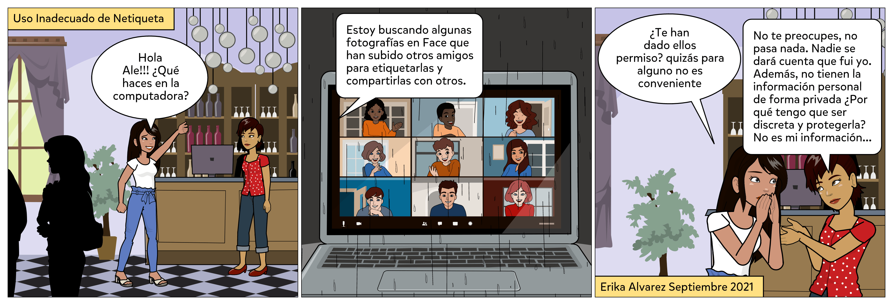

..
.
.
Diseñar de manera individual dos comics en el que se aborden reglas de comportamientos –Netiquetas- en espacios virtuales como blogs, correos electrónicos, redes sociales, etc.
Pasos para la preparación de la evidencia:
1. Hacer uso del material proporcionado en el área de Lectura Previa de este objeto de aprendizaje u otras fuentes confiables para identificar cuáles son las reglas o Netiquetas que deben aplicarse de forma responsable según el tipo de herramienta tecnológica, uso de la red, la información y el lenguaje.
2. Seleccionar dos herramientas tecnológicas para comunicación digital entre ellas Redes Sociales, Blog, Foros, Páginas Web, Videoconferencias, Correo electrónico, etc., para relatar en base a cada una de ellas, una historia de al menos 4 escenas utilizando la APP Pixton.
3. Una de las historias se utilizará para mostrar el uso incorrecto de una Netiqueta y la segunda para mostrar la aplicación adecuada de otra Netiqueta. Se deben considerar dos netiquetas diferentes. No pueden usar la misma en las dos herramientas tecnológicas.
4. La selección tanto de las dos herramientas tecnológicas y las reglas de comportamiento para crear los comics, dependerá de cada estudiante. El diseño general a presentar también lo determina cada estudiante.
5. Los comics deben estar estructurados de manera clara y precisa. Con texto e imágenes apropiadas según la Netiqueta que deseen expresar. Agregar como parte del material nombre del estudiante y fecha.
Ejemplo. Primera herramienta seleccionada: Redes Sociales.

En este caso en particular, el comic expresa el uso incorrecto de una Netiqueta. Ahora bien, en un segundo comic, ya no podría utilizarse Redes Sociales y uso incorrecto, tendría que mostrarse el uso adecuado de una regla de comportamiento en diferente herramienta tecnológica como Blog, Foros, Páginas Web, Videoconferencias, Correo electrónico, etc.
6. Una vez diseñada la historieta, copiar la imagen con todas las escenas para incluirla como parte de un documento Word.
7. La evidencia final será enviada por medio de la Plataforma Educativa Institucional en formato PDF con el nombre EC2-ACT9-APELLIDOS y debe incluir: Portada, las imágenes de todas las escenas de los 2 comics donde se especifique para cada una de ellas la Netiqueta y la herramienta tecnológica considerada.
Ejemplo de descripción.
Se identifica el uso inadecuado de la Netiqueta "Tener permiso antes de etiquetar fotografías de otras personas" para el ámbito de Redes Sociales.
.Para esta actividad se trabajará en Pixton utilizando el enlace https://edu-es.pixton.com/solo/
Deben Registrarse por medio de su clave de usuario y contraseña de Google. Les recomiendo tener una cuenta para la utilización de aplicaciones, independiente a la que tienen para otras cuestiones personales.
Al registrarse les pedirá hacer su Avatar, y posterior a ello les dará la oportunidad de hacer un comic. A partir de la segunda vez que entren al programa les llevará directamente al área personal para solicitar editar o crear uno nuevo.
Tienen Menú de opciones para desarrollar el Comic: Fondo, Personajes, Foco y Palabras. En esta práctica deben Incluir como parte de los personajes a su AVATAR que generaron al inicio.
Seleccionen los elementos que crean pertinentes. Una vez diseñado podrán guardarlo con el botón LISTO que se ubica en la parte superior derecha y los regresa al área personal que les permitirá Editar, Crear nuevo comic o Compartir alguno que tengan disponible.
No olviden cerrar sesión cada ocasión que terminen de trabajar con la APP, a través del icono de engrane en la parte superior derecha junto a su nombre.
.